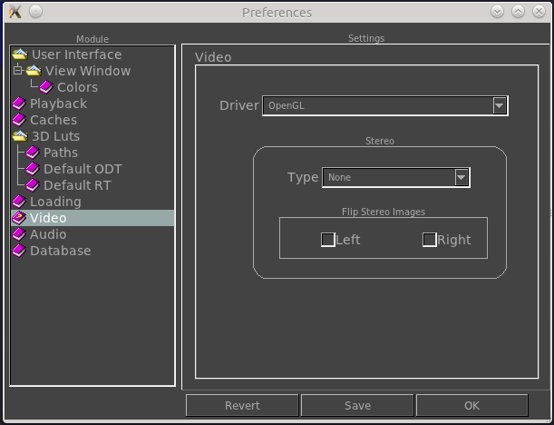

The Video Preferences tab allows you to configure how the video
works.

Driver
Here you can change the default driver when the viewer starts. By default, and for now, the only driver is OpenGL.
Stereo
Here you can set the default behavior for stereo images. Currently only Red-Cyan Anaglyphs are supported.
Blend Mode
Here you can set the default behavior when compositing one foreground image or video over a background image or movie. The traditional mode blends images with the following formula: FG*alpha + (1-alpha)*BG
The Premult option blends as if alpha is already premultiplied, like: FG + (1-alpha)*BG
where FG is the rgb channels of the foreground image, alpha is its alpha channel, and BG is the rgb channels of the background image.